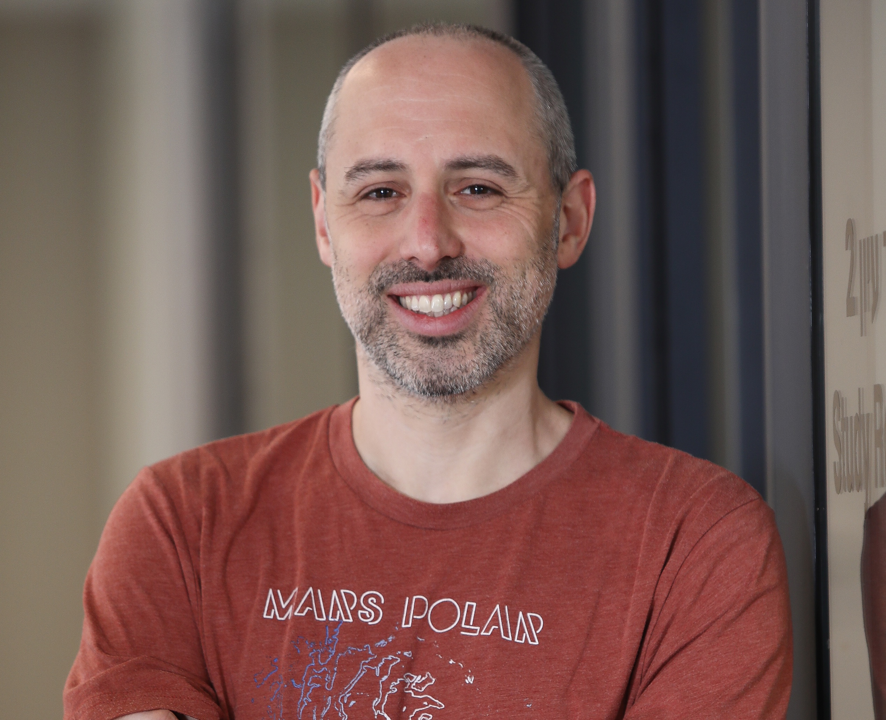
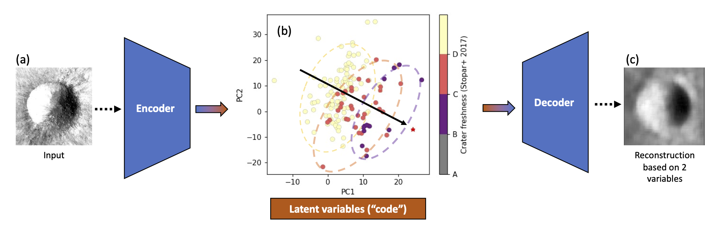
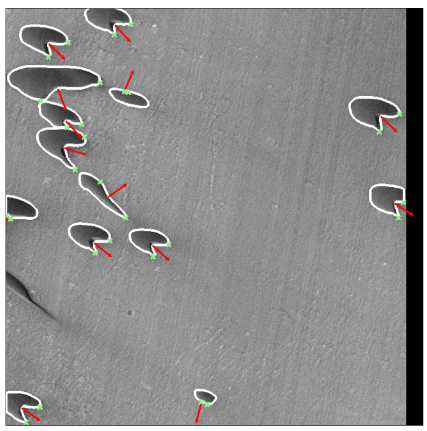
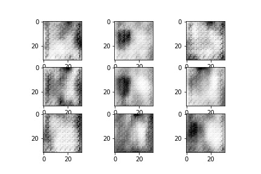

Assistant Professor of Planetary Science
About

I seek to understand how planetary surfaces form and evolve, and how they interact with ice, wind, and the harsh environment of space. To accomplish this goal, I harness the vast amount of remote sensing data gathered by NASA spacecraft and analyze them using statistics, machine and deep learning. As a member of the LRO Diviner team, I work on a variety of problems related to the way surface roughness affects the temperature and the stability of ice on the Moon.
Currently, I am an Assistant Professor at the Department of Earth and Planetary Sciences, Tel Aviv University. Previously, I was a postdoctoral scholar at the Department of Geological Sciences at Stanford University, where I worked with Mathieu Lapotre on applying artificial intelligence to map and investigate topographic features on the surface of Mars. Before that, I completed my PhD at UCLA, working with David Paige on problems related to radiometry and geomorphology on the Moon and Mercury, and my Master's degree at the Weizmann Institute of Science, where I worked with Oded Aharonson on modeling temperatures and ice stability on airless planetary surfaces. My undergraduate research projects focussed on characterizing Transient Luminous Events (TLEs) with Yoav Yair (the Open University) and Colin Price (Tel Aviv University).
Apart from research, I am also very much involved in science outreach. I was the scientific editor-in-chief of "Mada Gadol Bektana" (lit. "Science in a Nutshell"), the largest science outreach non-profit organization in Israel, and give popular science talks aimed at general audiences and professional organizations. From time to time I also publish articles on planetary science or astronomy in Israeli news sites — for example, the potential discovery of a planetary mass object in the Kuiper Belt, based on this paper.
Current Research
The vast volumes of information obtained by NASA spacecraft over the past decades require reevaluating traditional, manual methods for geospatial analysis of surface features. In this work, we use convolutional autoencoders to extract information from visible, thermal, and multi-spectral satellite and spacecraft data. This non-linear dimensionality reduction technique allows quantifying physical and geophysical phenomena in a reproducible manner for studying complex and long-term environmental and geologic processes.

In this project I am leading an effort to automatically detect and outline barchan dunes on Mars to extract local and global wind directions. I use Mask R-CNN, an instance segmentation neural network, to find dunes in images obtained by the Mars Reconnaissance Orbiter Context Camera (CTX). The network outputs the dunes' outlines, which are automatically analyzed using a slipface detection algorithm we developed, based on OpenCV's convexity defects algorithm.

Classification of imagery data usually requires an expert human analyst to label and classify topographic features. Even binary classification using a fully convolutional neural network will typically have trouble converging until several hundred images have been labeled. Here I explore how generative adversarial networks can train a binary classifier to detect impact craters with only a few dozen training samples.
The model reaches 90% accuracy with 50 samples, where a fully convolutional network cannot converge at all on a dataset that small.

Publications
Conference presentations
Press
Contact